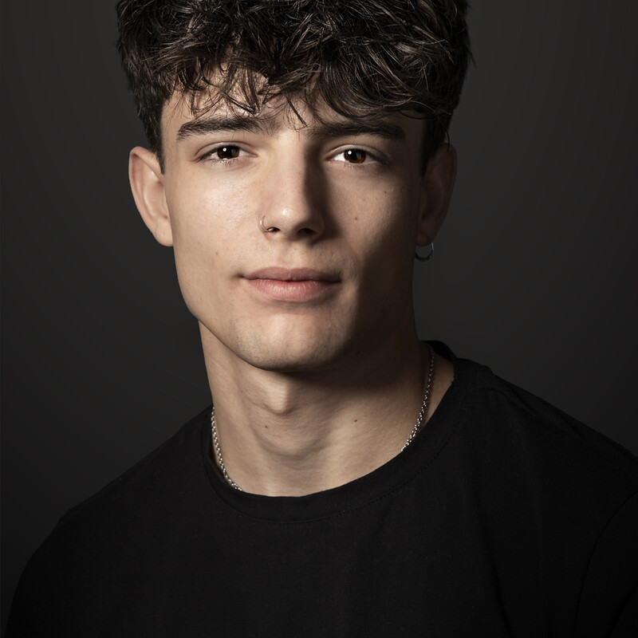

Diseño marcas y construyo los sistemas con IA que las hacen crecer.
Sistemas con IA
Lo que antes llevaba días ahora ocurre solo. Entra y míralo funcionar.
Proyectos
Siete historias que empezaron en una hoja en blanco. Elige una.
Creatividades
Piezas que frenan el scroll y mueven las ventas. Toca una y mira sus números.

Homero Jiménez Cabrera
Marca, diseño y sistemas con IA
Madrid y Granada
Lidero equipos de marca, diseño y marketing, y construyo los sistemas con IA que les permiten producir más sin bajar el nivel. Automatizo el camino de cada pieza, del encargo a la publicación, para que el equipo dedique su tiempo a lo que marca la diferencia: la IA produce; el criterio decide.
TrayectoriaDe diseñador júnior a Brand & Marketing Lead en menos de dos años.
Brand & Marketing Lead ÓptimaCultura · Madrid
jun. 2026 – hoy- Dirijo branding, web, diseño gráfico, editorial y campañas con una sola voz de marca.
- Implanto IA generativa y automatizaciones en el proceso creativo de marketing y marca, del brief a la pieza publicada, para producir contenido constante con calidad sostenida y menos tiempo de producción.
- Desarrollo herramientas internas con IA (Claude, n8n) que automatizan tareas repetitivas del equipo creativo.
Brand Lead ÓptimaCultura · Granada
feb. – may. 2026- Dirigí branding, diseño web, diseño gráfico y editorial, liderando un equipo creativo multidisciplinar.
- Implanté nuevas dinámicas de trabajo y automaticé procesos con IA para escalar la eficiencia del departamento.
- Integré la dirección de marketing en el área de marca, lo que dio paso a mi puesto actual.
Junior Web & Graphic Designer ÓptimaCultura · Granada
oct. 2024 – ene. 2026- Diseñé catálogos, cartelería, creatividades para redes, newsletters y piezas corporativas.
- Diseñé interfaces y prototipos web junto a marketing, producto y desarrollo.
- Creé la cartelería, la imagen gráfica y el catálogo de la exposición permanente «El Tesoro de la Virgen» (Granada).
Diseñador gráfico Autónomo · Granada
sept. – oct. 2024- Proyectos de identidad corporativa, materiales de marca y diseño web para empresas.
Formación y herramientasDiseño y Creatividad con un 9,8, IA generativa y ThePowerMBA.
Máster ThePowerMBA + Growth & Marketing Strategy ThePower
2026 · en cursoIA generativa para directores de arte y diseñadores Barcelona School of Creativity
2025Grado en Diseño y Creatividad · 9,8 ESADA
2021 – 2025
Claude · n8n · Figma · Adobe CC · Magnific · ElevenLabs · HubSpot
IdiomasEspañol nativo · Inglés C1, Cambridge Advanced